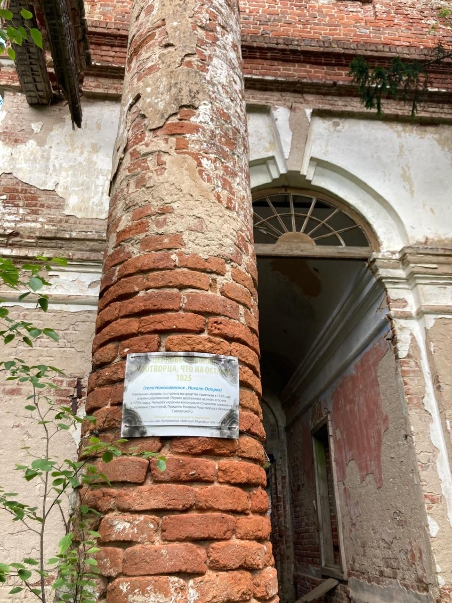
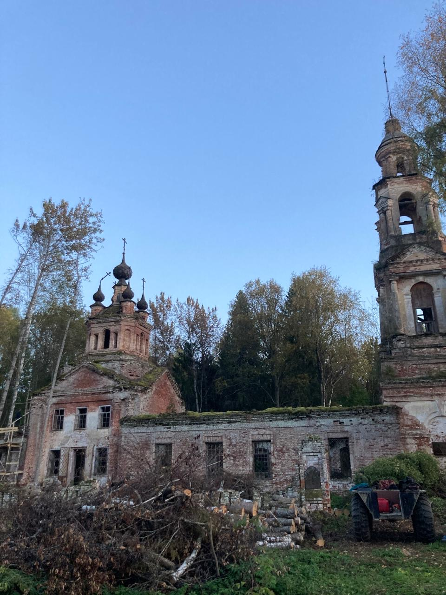
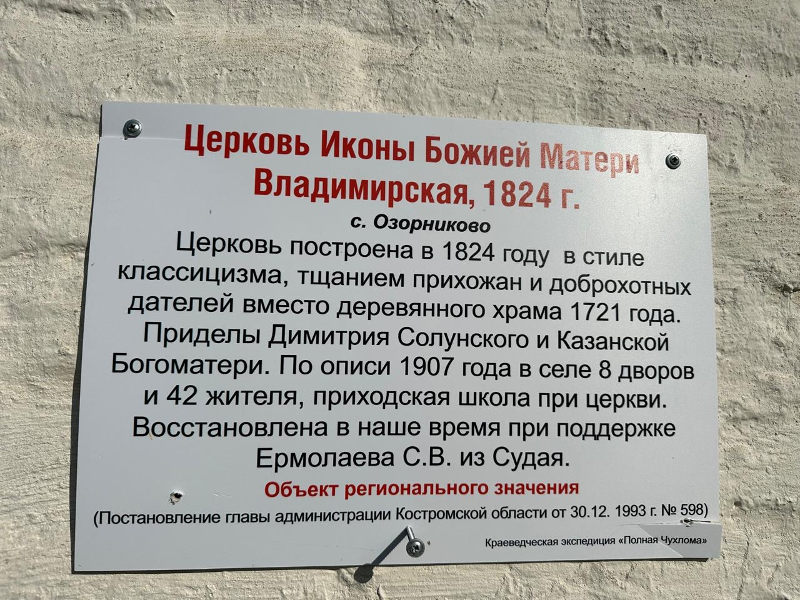
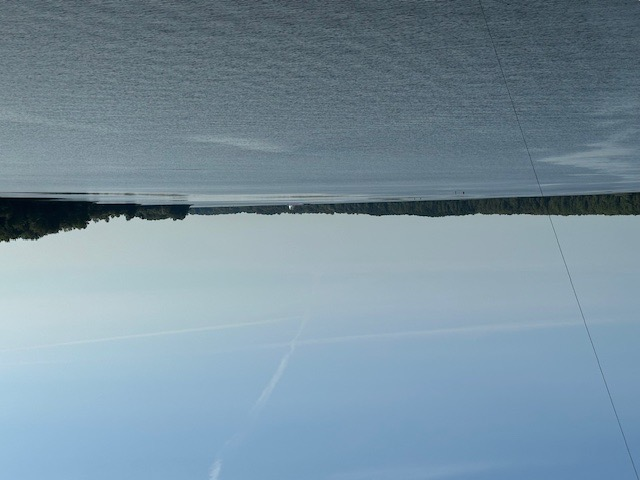

Исследование
История края
Материалы о Чухломском районе, его поселениях и формировании культурного ландшафта.
Проект собирает сведения о сельских храмах Верхнего Поволжья, документирует их современное состояние и сохраняет материалы для будущих исследований.

Изучаем, документируем и делимся знаниями об архитектурном наследии Костромского края.
Материалы о Чухломском районе, его поселениях и формировании культурного ландшафта.
Отдельные страницы храмов с фотографиями, местоположением и проверенными сведениями.
Современные съёмки, архивные изображения и материалы полевых поездок.

Каменный храмовый комплекс в лесном ландшафте Чухломского района.

Храм 1824 года в стиле классицизма, объект регионального значения.

Архивные и современные материалы о храме и поселении.

История местных храмов неотделима от озёр, лесов, старых дорог и небольших поселений. Архитектурные памятники помогают увидеть, как развивалась территория и как общины сохраняли свои святыни.